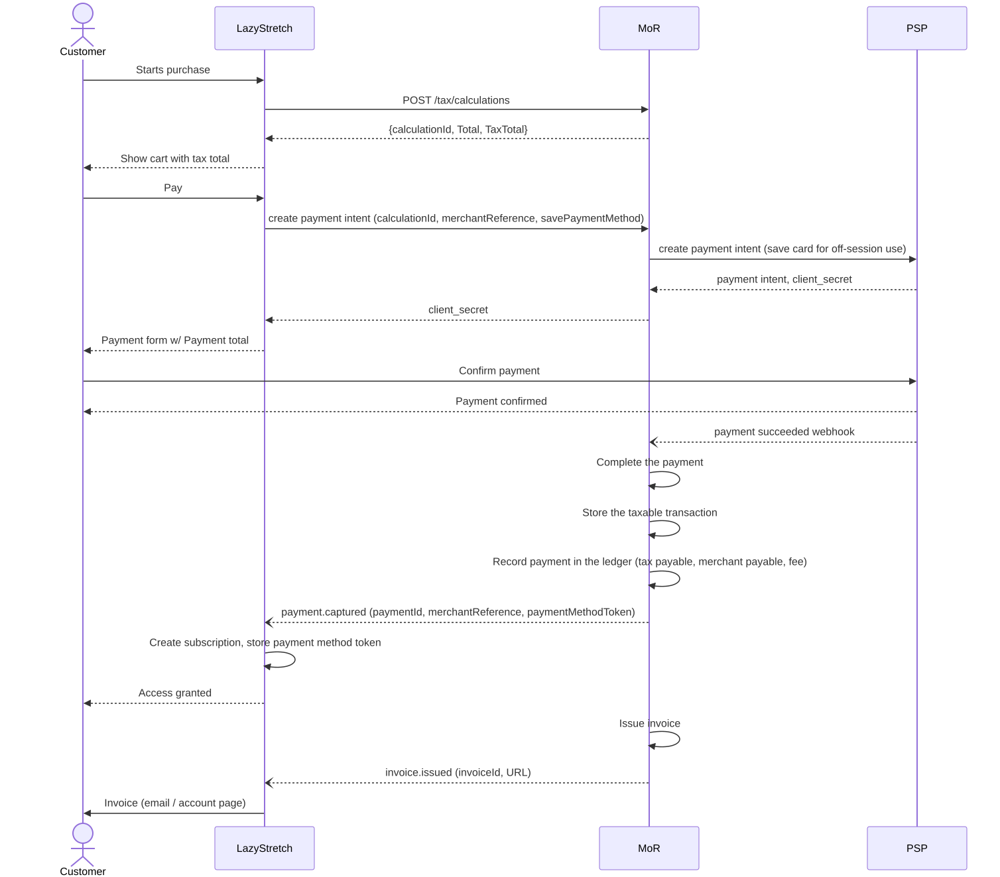
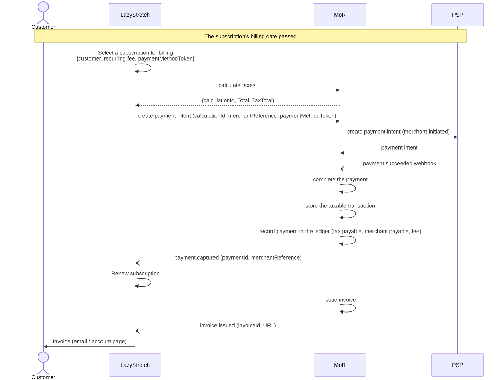
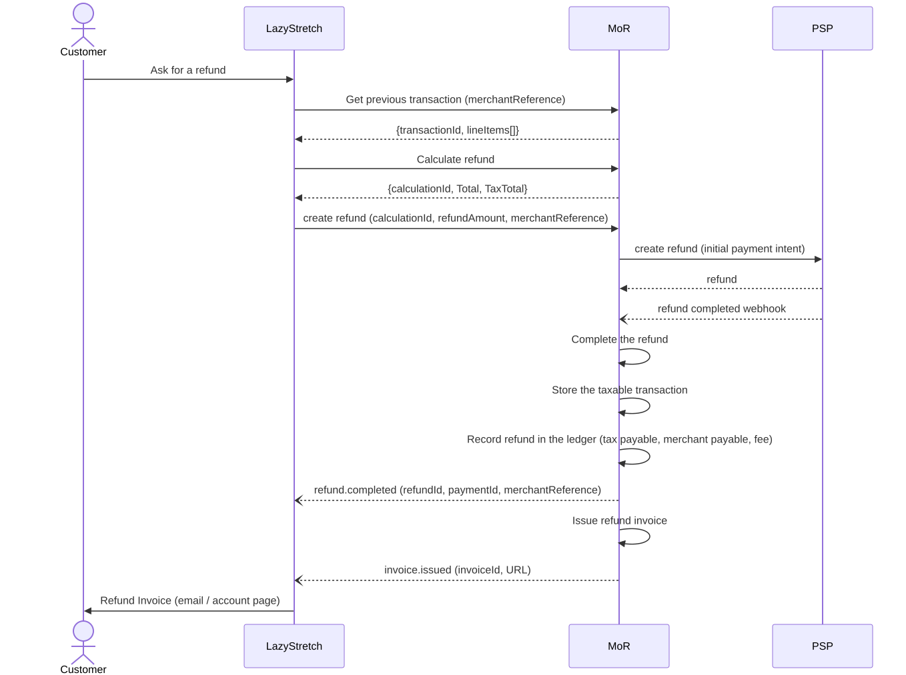
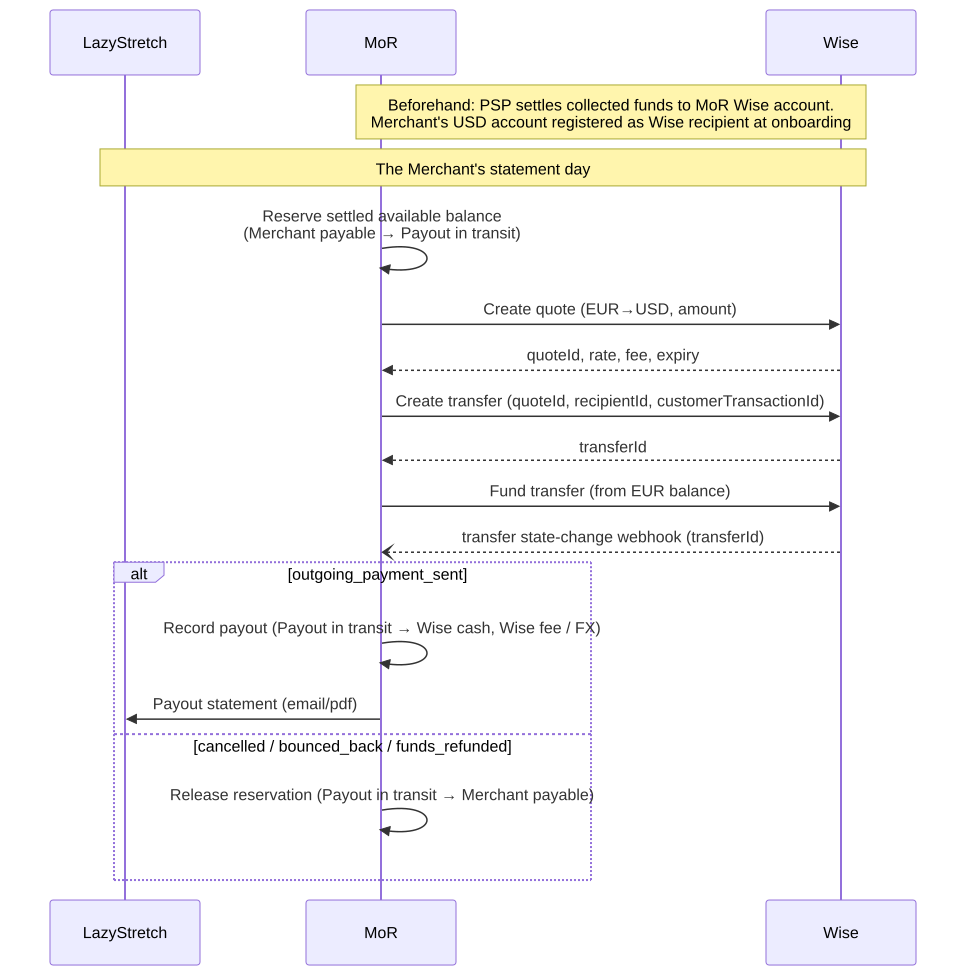
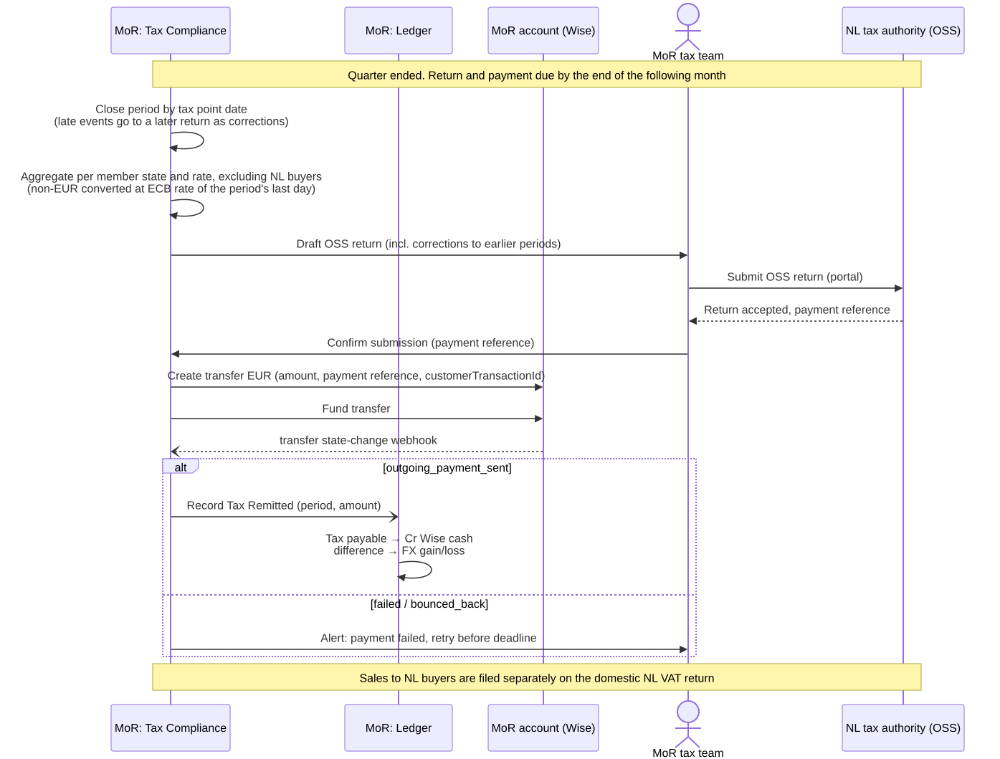

Appendix A
Sequence Diagrams
The diagrams were created to represent the scenarios mentioned in the Requirements section.
The goal for these diagrams was to understand the process in general, without going too much into details.
Therefore, internal components of the MoR platform are (mostly) not represented there.
Scenario 1: EU Buyer purchases the yoga subscription#
- The Buyer goes through the checkout process at Merchant's website
- MoR is responsible for calculating taxes for the Buyer's purchase
- MoR is responsible for collecting money from the Buyer
- The settled payment is registered in the ledger
- The same settled payment is stored as a taxable transaction, for the tax return
- MoR is responsible for issuing the invoice for the Buyer's purchase

Mermaid source
sequenceDiagram
actor Customer
participant LazyStretch
participant MoR
participant PSP
Customer->>LazyStretch: Starts purchase
LazyStretch->>MoR: POST /tax/calculations
MoR-->>LazyStretch: {calculationId, Total, TaxTotal}
LazyStretch-->>Customer: Show cart with tax total
Customer->>LazyStretch: Pay
LazyStretch->>MoR: create payment intent (calculationId, merchantReference, savePaymentMethod)
MoR->>PSP: create payment intent (save card for off-session use)
PSP-->>MoR: payment intent, client_secret
MoR-->>LazyStretch: client_secret
LazyStretch-->>Customer: Payment form w/ Payment total
Customer->>PSP: Confirm payment
PSP-->>Customer: Payment confirmed
PSP--)MoR: payment succeeded webhook
MoR->>MoR: Complete the payment
MoR->>MoR: Store the taxable transaction
MoR->>MoR: Record payment in the ledger (tax payable, merchant payable, fee)
MoR--)LazyStretch: payment.captured (paymentId, merchantReference, paymentMethodToken)
LazyStretch->>LazyStretch: Create subscription, store payment method token
LazyStretch-->>Customer: Access granted
MoR->>MoR: Issue invoice
MoR--)LazyStretch: invoice.issued (invoiceId, URL)
LazyStretch->>Customer: Invoice (email / account page)Scenario 2: On subscription renewal (or at another billing event) the Recurring Fee must be charged to the Buyer#
- The Merchant manages the subscription and its billing cycles
- The Merchant initiates charging the recurring fee for the subscription
- MoR is responsible for calculating taxes and collecting money
- The settled payment is registered in the ledger
- The same settled payment is stored as a taxable transaction, for the tax return
- MoR is responsible for issuing the invoice

Mermaid source
sequenceDiagram
actor Customer
participant LazyStretch
participant MoR
participant PSP
Note over Customer,PSP: The subscription's billing date passed
LazyStretch->>LazyStretch: Select a subscription for billing <br>{customer, recurring fee, paymentMethodToken}
LazyStretch->>MoR: calculate taxes
MoR-->>LazyStretch: {calculationId, Total, TaxTotal}
LazyStretch->>MoR: create payment intent (calculationId, merchantReference, paymentMethodToken)
MoR->>PSP: create payment intent (merchant-initiated)
PSP-->>MoR: payment intent
PSP--)MoR: payment succeeded webhook
MoR->>MoR: complete the payment
MoR->>MoR: store the taxable transaction
MoR->>MoR: record payment in the ledger (tax payable, merchant payable, fee)
MoR--)LazyStretch: payment.captured (paymentId, merchantReference)
LazyStretch->>LazyStretch: Renew subscription
MoR->>MoR: issue invoice
MoR--)LazyStretch: invoice.issued (invoiceId, URL)
LazyStretch->>Customer: Invoice (email / account page)Scenario 3: Merchant-initiated refund#
- The Merchant can find previously completed transactions and choose one for refund
- The Merchant creates the refund request
- MoR is responsible for processing the refund through the PSP
- The processed refund is registered in the ledger
- The same refund is stored as a tax transaction, for the tax return
- MoR is responsible for issuing the refund invoice

Mermaid source
sequenceDiagram
actor Customer
participant LazyStretch
participant MoR
participant PSP
Customer->>LazyStretch: Ask for a refund
LazyStretch->>MoR: Get previous transaction (merchantReference)
MoR-->>LazyStretch: {transactionId, lineItems[]}
LazyStretch->>MoR: Calculate refund
MoR-->>LazyStretch: {calculationId, Total, TaxTotal}
LazyStretch->>MoR: create refund (calculationId, refundAmount, merchantReference)
MoR->>PSP: create refund (initial payment intent)
PSP-->>MoR: refund
PSP--)MoR: refund completed webhook
MoR->>MoR: Complete the refund
MoR->>MoR: Store the taxable transaction
MoR->>MoR: Record refund in the ledger (tax payable, merchant payable, fee)
MoR--)LazyStretch: refund.completed (refundId, paymentId, merchantReference)
MoR->>MoR: Issue refund invoice
MoR--)LazyStretch: invoice.issued (invoiceId, URL)
LazyStretch->>Customer: Refund Invoice (email / account page)Scenario 4: Payout to the Merchant#
- MoR obtains the Merchant's balance from the ledger
- Proceeds are paid out to the Merchant's USD account through our Wise account
- Successful payout is recorded in the ledger, updating the Merchant's balance

Mermaid source
sequenceDiagram
participant LazyStretch
participant MoR
participant Wise
Note over MoR,Wise: Beforehand: PSP settles collected funds to MoR Wise account.<br>Merchant's USD account registered as Wise recipient at onboarding
Note over LazyStretch,Wise: The Merchant's statement day
MoR->>MoR: Reserve settled available balance<br>(Merchant payable → Payout in transit)
MoR->>Wise: Create quote (EUR→USD, amount)
Wise-->>MoR: quoteId, rate, fee, expiry
MoR->>Wise: Create transfer (quoteId, recipientId, customerTransactionId)
Wise-->>MoR: transferId
MoR->>Wise: Fund transfer (from EUR balance)
Wise--)MoR: transfer state-change webhook (transferId)
alt outgoing_payment_sent
MoR->>MoR: Record payout (Payout in transit → Wise cash, Wise fee / FX)
MoR->>LazyStretch: Payout statement (email/pdf)
else cancelled / bounced_back / funds_refunded
MoR->>MoR: Release reservation (Payout in transit → Merchant payable)
endScenario 5: File and remit EU taxes for the quarter#
- At period end, taxable transactions are added up per country and optionally rated, to prepare the tax return
- MoR is responsible for filing EU taxes with the authorities
- Taxes are remitted from the MoR account, and the remittance is recorded in the ledger

Mermaid source
sequenceDiagram
participant Tax as MoR: Tax Compliance
participant Ledger as MoR: Ledger
participant Wise as MoR account (Wise)
actor Ops as MoR tax team
participant NL as NL tax authority (OSS)
Note over Tax,NL: Quarter ended. Return and payment due by the end of the following month
Tax->>Tax: Close period by tax point date<br>(late events go to a later return as corrections)
Tax->>Tax: Aggregate per member state and rate, excluding NL buyers<br>(non-EUR converted at ECB rate of the period's last day)
Tax->>Ops: Draft OSS return (incl. corrections to earlier periods)
Ops->>NL: Submit OSS return (portal)
NL-->>Ops: Return accepted, payment reference
Ops->>Tax: Confirm submission (payment reference)
Tax->>Wise: Create transfer EUR (amount, payment reference, customerTransactionId)
Tax->>Wise: Fund transfer
Wise--)Tax: transfer state-change webhook
alt outgoing_payment_sent
Tax-)Ledger: Record Tax Remitted (period, amount)
Ledger->>Ledger: Tax payable → Cr Wise cash<br>difference → FX gain/loss
else failed / bounced_back
Tax->>Ops: Alert: payment failed, retry before deadline
end
Note over Tax,NL: Sales to NL buyers are filed separately on the domestic NL VAT return